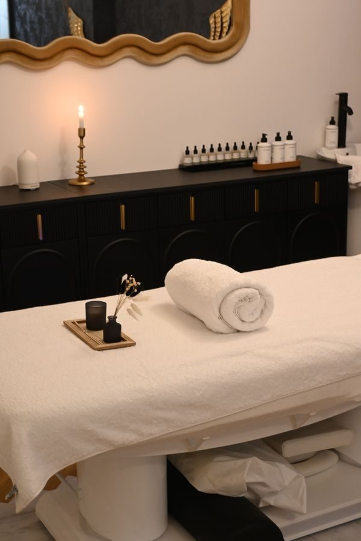
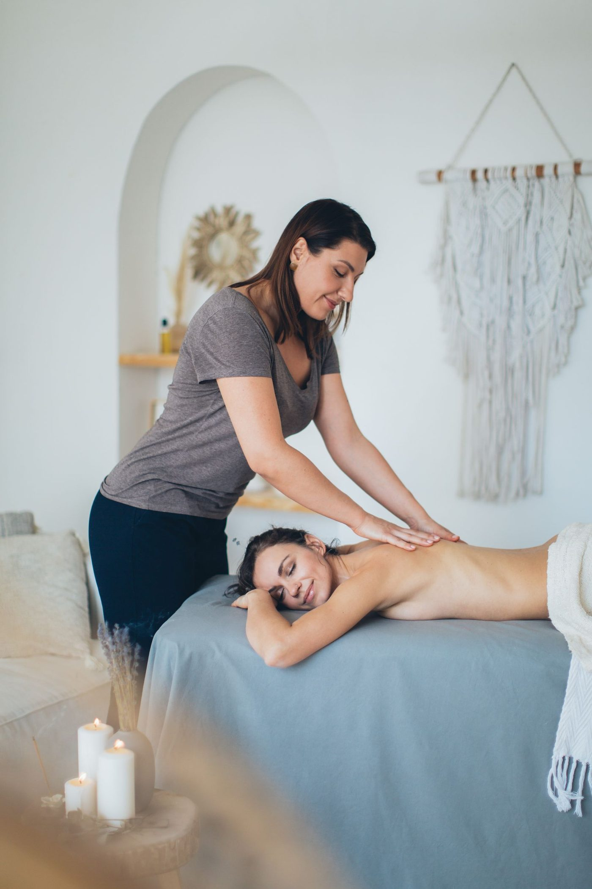

Massage, in stock photos


Huntsville, Alabama
Wellness Massage Huntsville is a luxury massage therapy studio in Huntsville, offering foot reflexology, full body massage, and hot stone massage, with appointments through a reservation system. Call to book.

Wellness Massage Huntsville is a luxury massage therapy studio at 2000 Cecil Ashburn Dr SE #105 in Huntsville. Services described in listings include foot reflexology, full body massage, and hot stone massage, among others. Appointments are made through a third-party reservation system; call to book.

2000 Cecil Ashburn Dr SE #105, Huntsville, AL 35802
Sunday 12:00 PM to 9:00 PM, Monday to Saturday 10:00 AM to 9:00 PM